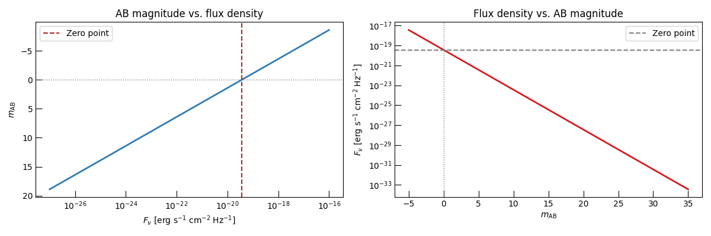
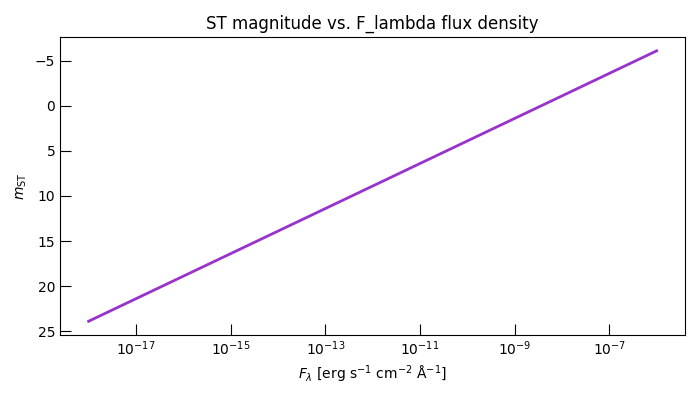
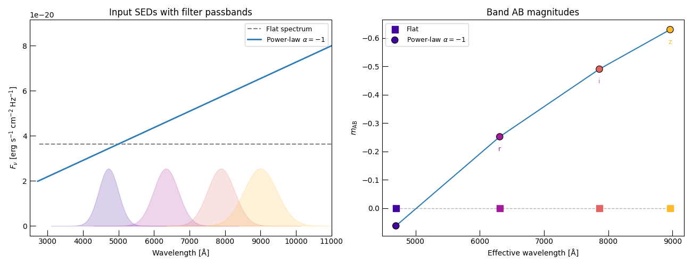
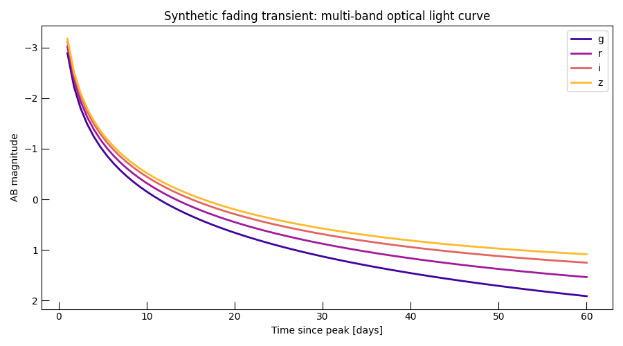

Note
Go to the end to download the full example code.
Magnitude Systems: AB, ST, and Filter-Convolved Photometry#
Trilobite natively supports the two photometric magnitude systems most commonly encountered in optical transient work:
AB magnitudes — defined by a constant SED of \(F_\nu = 3.631 \times 10^{-20}\) erg/s/cm²/Hz at all frequencies.
ST magnitudes — defined by a constant SED of \(F_\lambda\) = const at all wavelengths, with the zero point at \(m_\mathrm{ST} = -2.5\log_{10}(F_\lambda) - 21.1\) (F_λ in erg/s/cm²/Å).
This example demonstrates:
Converting between flux density and AB magnitudes.
Converting between flux density and ST magnitudes.
Computing filter-convolved AB magnitudes from a physical SED model.
Building a synthetic multi-band optical light curve in magnitudes.
Relevant API references#
Imports#
import matplotlib.pyplot as plt
import numpy as np
import astropy.units as u
from trilobite.utils.phot_utils import (
FilterBundle,
PhotometryFilter,
ab_mag_to_flux,
filter_to_ab_mag,
flux_lambda_to_st_mag,
flux_to_ab_mag,
st_mag_to_flux_lambda,
)
from trilobite.utils.plot_utils import set_plot_style
set_plot_style()
AB Magnitude Basics#
The AB zero point is defined so that a source with a flat spectrum \(F_\nu = 3.631 \times 10^{-20}\) erg/s/cm²/Hz has \(m_\mathrm{AB} = 0\) at every frequency. The conversion is therefore:
# Zero-point verification
F_zero = 3.631e-20 # erg/s/cm²/Hz
print(f"AB mag at zero point : {flux_to_ab_mag(F_zero):.6f} (expected 0.0)")
print(f"Flux at AB mag = 0 : {ab_mag_to_flux(0.0):.4e} (expected 3.631e-20)")
# Demonstrate roundtrip accuracy
test_fluxes = np.logspace(-26, -16, 200) # erg/s/cm²/Hz
recovered = ab_mag_to_flux(flux_to_ab_mag(test_fluxes))
max_err = np.max(np.abs(recovered / test_fluxes - 1.0))
print(f"Max roundtrip error : {max_err:.2e} (machine precision)")
AB mag at zero point : -0.000000 (expected 0.0)
Flux at AB mag = 0 : 3.6310e-20 (expected 3.631e-20)
Max roundtrip error : 2.89e-15 (machine precision)
The Flux–Magnitude Relationship#
AB magnitude increases as flux decreases (dimmer sources have larger magnitudes). A factor-of-100 in flux corresponds to exactly 5 magnitudes.
fig, axes = plt.subplots(1, 2, figsize=(12, 4))
ax = axes[0]
F_range = np.geomspace(1e-27, 1e-16, 300)
ax.plot(F_range, flux_to_ab_mag(F_range), color="#2c7bb6", lw=2)
ax.axvline(3.631e-20, color="firebrick", ls="--", label="Zero point")
ax.axhline(0, color="0.5", ls=":", lw=1)
ax.set_xscale("log")
ax.set_xlabel(r"$F_\nu$ [erg s$^{-1}$ cm$^{-2}$ Hz$^{-1}$]")
ax.set_ylabel(r"$m_\mathrm{AB}$")
ax.set_title("AB magnitude vs. flux density")
ax.legend()
ax.invert_yaxis()
ax = axes[1]
mag_range = np.linspace(-5, 35, 300)
ax.plot(mag_range, ab_mag_to_flux(mag_range), color="#d7191c", lw=2)
ax.axhline(3.631e-20, color="0.5", ls="--", label="Zero point")
ax.axvline(0, color="0.5", ls=":", lw=1)
ax.set_yscale("log")
ax.set_xlabel(r"$m_\mathrm{AB}$")
ax.set_ylabel(r"$F_\nu$ [erg s$^{-1}$ cm$^{-2}$ Hz$^{-1}$]")
ax.set_title("Flux density vs. AB magnitude")
ax.legend()
plt.tight_layout()
plt.show()

ST Magnitudes#
The ST system uses flux per unit wavelength, making it convenient for work in the UV where spectra are measured as \(F_\lambda\). The zero point is \(m_\mathrm{ST} = -2.5\log_{10}(F_\lambda) - 21.1\) (with \(F_\lambda\) in erg/s/cm²/Å).
F_lambda_range = np.logspace(-18, -6, 300) # erg/s/cm²/Å
st_mags = flux_lambda_to_st_mag(F_lambda_range)
recovered_F = st_mag_to_flux_lambda(st_mags)
max_err_st = np.max(np.abs(recovered_F / F_lambda_range - 1.0))
print(f"\nST roundtrip max error: {max_err_st:.2e}")
fig, ax = plt.subplots(figsize=(7, 4))
ax.plot(F_lambda_range, st_mags, color="darkorchid", lw=2)
ax.set_xscale("log")
ax.set_xlabel(r"$F_\lambda$ [erg s$^{-1}$ cm$^{-2}$ Å$^{-1}$]")
ax.set_ylabel(r"$m_\mathrm{ST}$")
ax.set_title("ST magnitude vs. F_lambda flux density")
ax.invert_yaxis()
plt.tight_layout()
plt.show()

ST roundtrip max error: 8.33e-15
Filter-Convolved AB Magnitudes#
filter_to_ab_mag() combines filter
convolution and magnitude conversion in one call. It accepts either a single
PhotometryFilter or a
FilterBundle.
Here we pass a flat spectrum (which should give AB mag = 0 in all bands) and a power-law spectrum.
# Build a 4-filter bundle (approximate ZTF grizy)
BANDS = {"g": (4720, 650), "r": (6340, 820), "i": (7890, 900), "z": (9000, 1100)}
filt_dict = {}
for band, (center, width) in BANDS.items():
lam = np.linspace(center - 2.5 * width, center + 2.5 * width, 300) * u.AA
T = np.exp(-0.5 * ((lam.value - center) / (width / 2.35)) ** 2)
filt_dict[band] = PhotometryFilter(lam, T, name=f"ztf-{band}")
bundle = FilterBundle(filt_dict)
# Dense frequency grid spanning all filters
nu_sed = np.geomspace(2.5e14, 1.1e15, 3000) # Hz
# (a) Flat spectrum → should give AB mag ≈ 0 in all bands
F_flat = np.full_like(nu_sed, 3.631e-20)
mags_flat = filter_to_ab_mag(bundle, nu_sed, F_flat)
print(f"\nFlat spectrum AB magnitudes (all should be ~0):")
for band, mag in zip(bundle.filter_names, mags_flat):
print(f" {band}: {mag:.3f} mag")
# (b) Power-law spectrum with spectral index α = -1
F_power = 3.631e-20 * (nu_sed / 6e14) ** (-1.0)
mags_power = filter_to_ab_mag(bundle, nu_sed, F_power)
print(f"\nPower-law (alpha=-1) AB magnitudes:")
for band, mag in zip(bundle.filter_names, mags_power):
lam_eff_aa = bundle[band].effective_wavelength * 1e8
print(f" {band} ({lam_eff_aa:.0f} Å): {mag:.3f} mag")
Flat spectrum AB magnitudes (all should be ~0):
g: 0.000 mag
r: 0.000 mag
i: -0.000 mag
z: -0.000 mag
Power-law (alpha=-1) AB magnitudes:
g (4695 Å): 0.062 mag
r (6311 Å): -0.252 mag
i (7862 Å): -0.490 mag
z (8963 Å): -0.629 mag
Plot the SED and Band Magnitudes Side-by-Side#
c_cgs = 2.99792458e10
colors = plt.cm.plasma(np.linspace(0.1, 0.85, len(bundle)))
fig, axes = plt.subplots(1, 2, figsize=(13, 5))
# Left: SEDs in flux space
ax = axes[0]
lam_aa = c_cgs / nu_sed * 1e8
ax.plot(lam_aa, F_flat, color="0.5", lw=1.5, ls="--", label="Flat spectrum")
ax.plot(lam_aa, F_power, color="#2c7bb6", lw=2, label=r"Power-law $\alpha=-1$")
for color, (band, filt) in zip(colors, bundle.filters.items()):
ax.fill_between(
filt.wavelength * 1e8,
0,
filt.transmission * F_flat.max() * 0.7,
color=color,
alpha=0.18,
)
ax.set_xlabel("Wavelength [Å]")
ax.set_ylabel(r"$F_\nu$ [erg s$^{-1}$ cm$^{-2}$ Hz$^{-1}$]")
ax.set_title("Input SEDs with filter passbands")
ax.set_xlim(2500, 11000)
ax.legend(fontsize=9)
# Right: resulting band magnitudes
ax = axes[1]
lam_effs = [bundle[b].effective_wavelength * 1e8 for b in bundle.filter_names]
ax.scatter(lam_effs, mags_flat, s=80, marker="s", c=list(colors), label="Flat", zorder=3)
ax.scatter(
lam_effs,
mags_power,
s=80,
marker="o",
c=list(colors),
edgecolors="black",
linewidths=0.8,
label=r"Power-law $\alpha=-1$",
zorder=3,
)
ax.plot(lam_effs, mags_flat, color="0.7", ls="--", lw=1)
ax.plot(lam_effs, mags_power, color="#2c7bb6", lw=1.5)
for color, band, lam_e in zip(colors, bundle.filter_names, lam_effs):
ax.annotate(
band, (lam_e, mags_power[list(bundle.filter_names).index(band)] + 0.05), ha="center", fontsize=9, color=color
)
ax.set_xlabel("Effective wavelength [Å]")
ax.set_ylabel(r"$m_\mathrm{AB}$")
ax.set_title("Band AB magnitudes")
ax.invert_yaxis()
ax.legend(fontsize=9)
plt.tight_layout()
plt.show()

Synthetic Multi-Band Light Curve in Magnitudes#
We model a fading optical transient as a power-law SED whose normalisation drops as \(F_\mathrm{ref} \propto t^{-1}\) and whose spectral index steepens over time, then compute the resulting multi-band magnitude evolution.
t_days = np.linspace(1, 60, 80)
# Time-evolving SED parameters
F_ref_t = 5e-19 * (t_days / 1.0) ** (-1.1) # fading normalisation
alpha_t = -0.4 - 0.8 * (t_days / 60.0) # steepening spectral index
# Evaluate F_nu on the common grid for every epoch: shape (N_t, N_common)
nu_eval = bundle.frequency_grid # use bundle's common grid
F_nu_all = F_ref_t[:, None] * (nu_eval[None, :] / 7e14) ** alpha_t[:, None] # shape (N_t, N_common)
# Single call for all epochs and all filters
mags_all = filter_to_ab_mag(bundle, nu_eval, F_nu_all) # shape (N_t, N_filters)
fig, ax = plt.subplots(figsize=(9, 5))
colors_lc = plt.cm.plasma(np.linspace(0.1, 0.85, len(bundle)))
for color, band, mags in zip(colors_lc, bundle.filter_names, mags_all.T):
ax.plot(t_days, mags, color=color, lw=2, label=band)
ax.invert_yaxis()
ax.set_xlabel("Time since peak [days]")
ax.set_ylabel("AB magnitude")
ax.set_title("Synthetic fading transient: multi-band optical light curve")
ax.legend()
plt.tight_layout()
plt.show()

Note
The call filter_to_ab_mag(bundle, nu_eval, F_nu_all) internally calls
bundle.apply() (a single matrix multiply) followed by
flux_to_ab_mag(). Passing nu_eval =
bundle.frequency_grid means no interpolation is required — this is the
same hot-loop pattern as in the MCMC example.
Total running time of the script: (0 minutes 0.896 seconds)